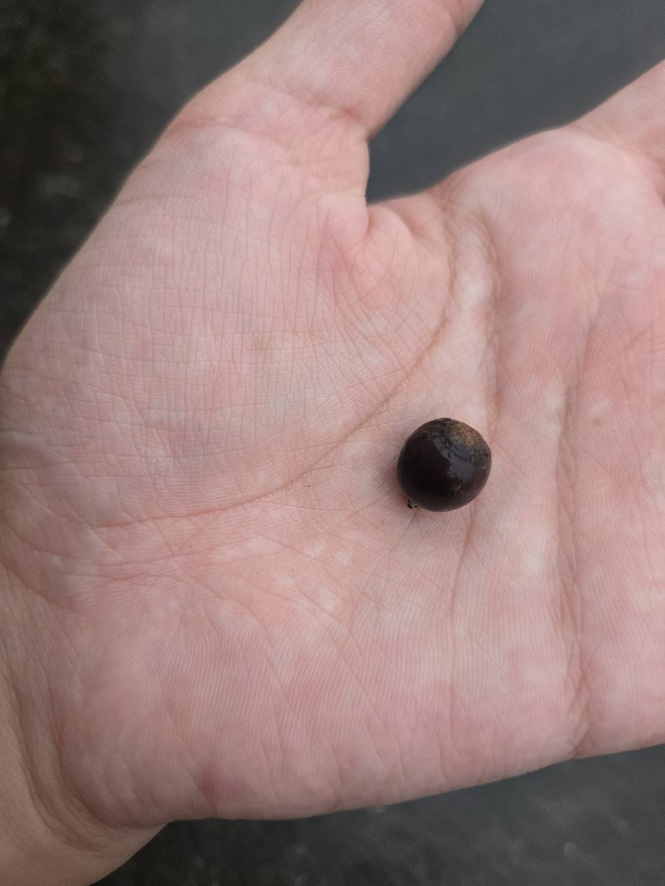
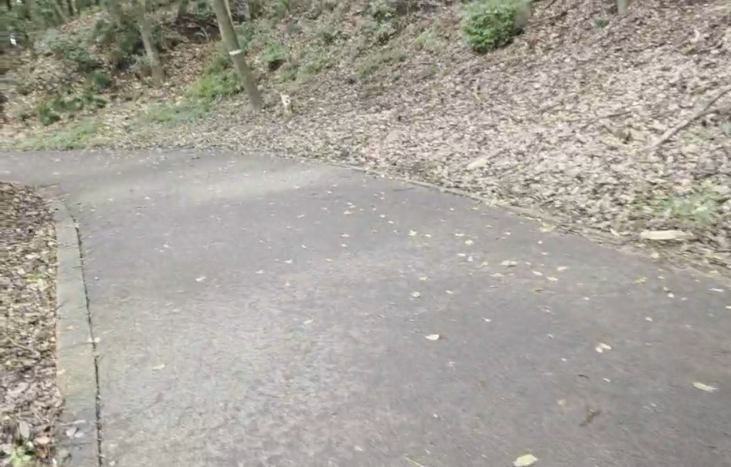
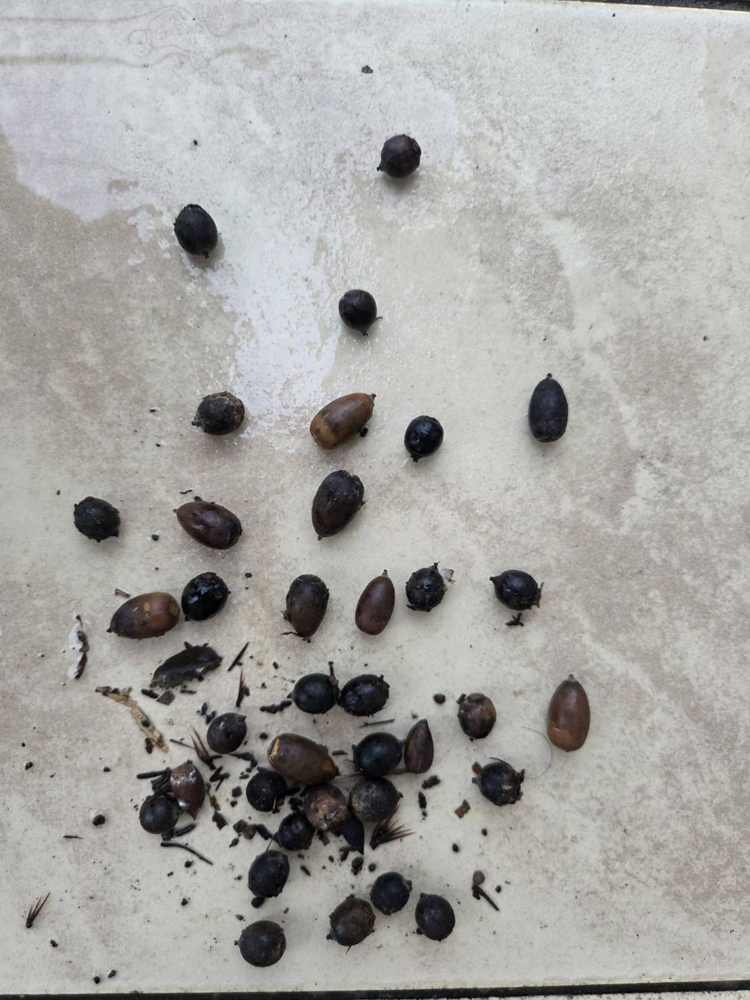

どんぐりピザを作ろう！
ある日のこと、生物班の幾人かが部誌の執筆に勤しんでいるというささやかな噂を小耳に挟んだ。
その営みに触発されるようにして、私もまた、己の記憶と時間を言葉として書き残しておきたい衝動に駆られたのだった。 だから今、ここにいる。
せっかく誌面に寄稿するのであれば、我が校に、あるいは我々の日常に地続きにある題材を選びたい。
そうして生まれたテーマが
「城址公園で採取したどんぐりを用いてピザをつくる」
なぜどんぐりでピザを焼こうと思ったのか？私が過去に作ったことがあるからだ。
なぜ城址公園なのか？城址公園には、シラカシ（どんぐりをつくる樹木）が群生しているからだ。

←シラカシのどんぐり
その数、実に千本超！！（※「2026毎木調査用データ」より）。
それほどのシラカシが鎮座しているその場所はもはや公園ではなく、無限の恵みを約束された聖域のようにすら思えた。
～19日～
そうと決まれば善は急げ。昔々よろしく、城址公園へ出陣した。

さて、どんぐりというものは、無条件にすべてが食料となり得るわけではない。
虫食い、腐敗、などといった食べられないものを選別せねばならない。
そのための手法が、どんぐりたちを一度水中に沈めることである。
画像のように食べられるものは底へと沈み（左）、たべられないものは水面へと浮上する（右）。
.jpg) ←食べられる
←食べられる
.jpg) ←食べられない
←食べられない
「落ちたら合格」だなんて。なんという皮肉(笑)
～1時間と30分後～
天気予報によれば、台風が季節を押し進めているらしい 。
このまま冷気に包まれ風邪を引くのは御免であるため、本日の採取行動はこれにて強制終了としよう。
さて、気になる結果であるが――

←計36個w
だめ、ダメ。駄目
全っ然、足りない。
秋の深まりとともに豊かな実りがもたらされているはずだという私の目論見は、脆くも崩れ去った。地面を埋めていた実のほとんどは、過去の季節が残していった空虚な骸に過ぎなかったのだ。
さらに追い打ちをかけるように、水没選別をクリアして沈んだはずの個体であっても、殻をよく見ると穴があり、割ってみれば内部は虫蝕みの地獄絵図（恐らくは雨水が染み込んで重量が増し、偽りの合格を果たしたのだろう）。
手元に残された確かな実の数は、哀しいほどに僅かであった。
「城址公園」というコンセプトは、ピザの生地ひとつ焼き上げることすら叶わず、潰えた。私の計画は、どこへ向かえばよいのだろう。
「⁉」
そうだ、こういう絶望的状況だからこそ、あそこへ赴くべきなのだ！
どんぐりピザの聖地。
私のオリジン――21世紀へと！
いざ、聖地